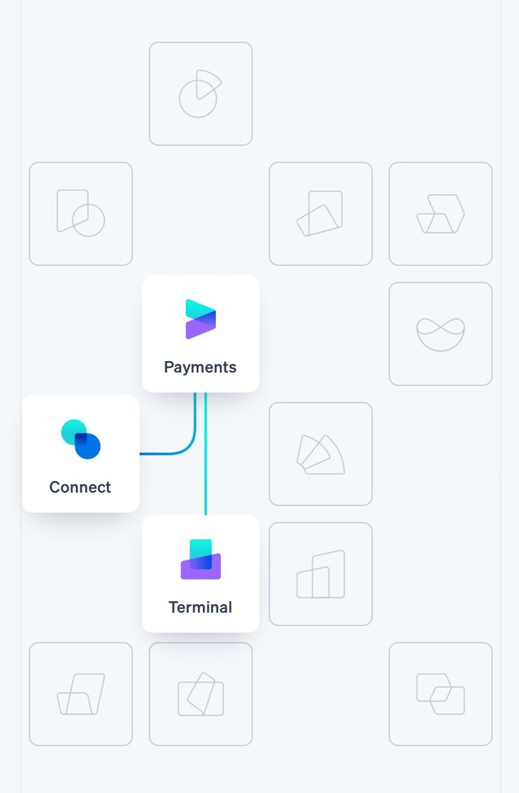
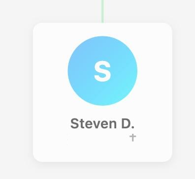
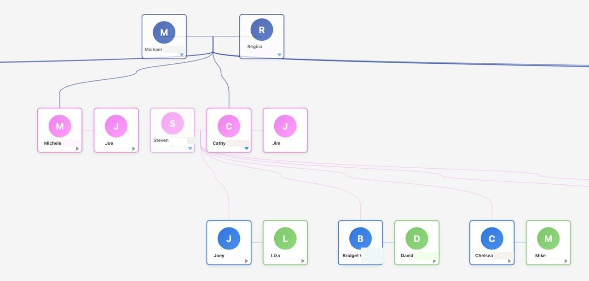
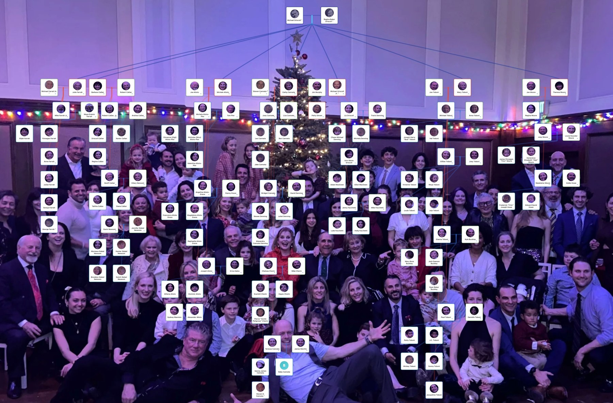
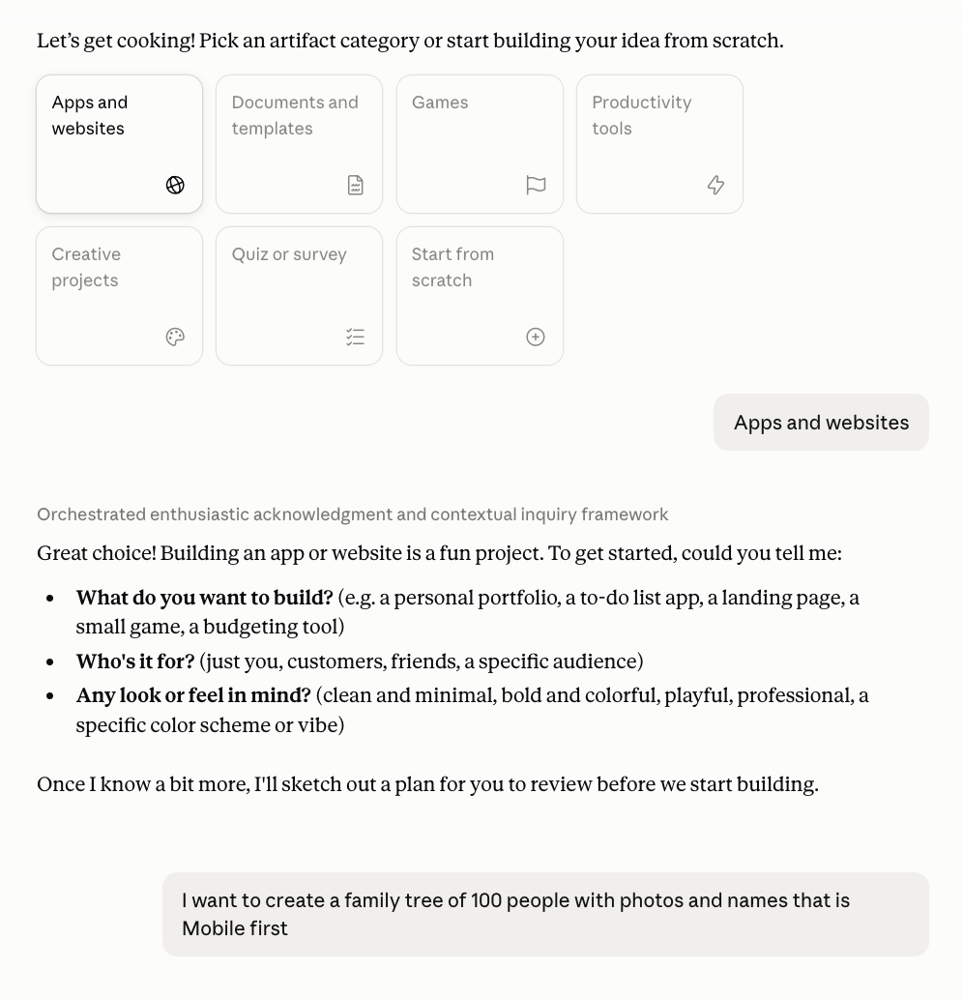
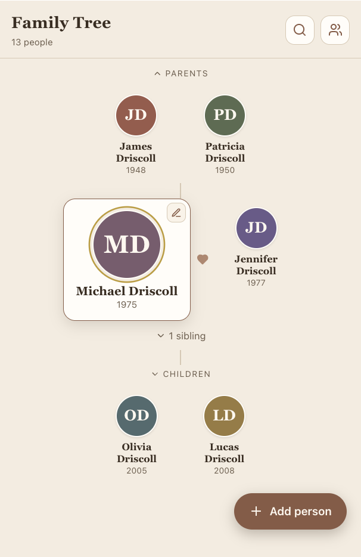

The two versions, side by side
Why I built it
The problem
Our family has grown so big that the fourth-generation kids don't always know who belongs to who. So the idea got tossed around to put a family tree out at our annual Christmas party, something everyone could gather around and use to see how they're all connected.
The solution
Instead of a paper tree, I decided to build a digital one. And because I also run the holiday party and its RSVPs, I planned an RSVP section for the future: the family tree and guest list, together in one place.
A potential product
I can see this being useful well beyond my family. Anyone who hosts an annual reunion has the same problem, so their kids, too, could learn about the relatives they're meeting, and never feel embarrassed about not knowing how they relate.
Christmas 2025: the first version
The first Driscmas came together for Christmas 2025. I hired a developer (a few hundred dollars) and provided the idea, names, photos and design direction. They built it in Cursor from that, and it was live in time for the holidays.
The design direction

I didn't write the code, but the design direction was mine: a visual reference for the overall feel, a design for the person cards, a color system for the generations, and the holiday mood I wanted.
I started from Stripe. I love how their product cards float on a soft background, linked by thin lines: calm, clean, and clearly structured. That became the north star for how the tree should feel.
Then we agreed on a single "person box" for everyone: a rounded white card, a soft gradient circle with the person's initial (a photo drops in when there is one), their name, and a small cross beside anyone we've lost.

Stacked together, those cards make the tree: generations top to bottom, connector lines tracing parents, partners, and children.

Each generation got its own color, from a palette I picked so every layer of the family reads distinctly.
Alongside those, a set of Christmas colors were added for warmth and a holiday feel.
It did the job just in time for Christmas, but it had one real limitation: it was built for desktop and I knew most people would like to look at it on their phones. So, the next version needed to be mobile, first.

April 2026: I rebuilt it with Claude
A few months passed and I found some time to work on the mobile version. I also realized there were security issues. The names and password were not protected in a database and could be seen right there in the HTML code! So, I decided to rebuild it myself, this time with Claude.
1It started with one prompt
No spec, no wireframe. Just the intent, typed in plain language:
"I want to create a family tree of 100 people with photos and names that is Mobile first." My very first message

2The first prototype
Within minutes there was something real on screen: a small, tappable tree. Thirteen placeholder people, colored initials where the photos would go, an "Add person" button. Rough, but real enough to react to, which is the whole point.

3The plan
Before going further, Claude sketched a plan we could build against:
- A mobile-first, zoomable tree you navigate with your thumbs: pinch to zoom, drag to pan.
- Tap any person to focus them: their parents, partner, and children, centered on screen.
- A search bar to jump to anyone by name, essential once you pass a hundred people.
- A card per person with a photo and name, and a colored initials avatar as a graceful fallback.
- Fill it with the real family: I imported all 119 people from a spreadsheet of names I already had, sorted into four generations and color-coded, and handled the messy cases (like a relative with both a current and a former partner) so they read cleanly on a phone.


4Finding anyone: search
With that many relatives, tapping through the tree isn't enough, and search was actually Claude's idea, not mine. It suggested it early, and it turned out to be one of the most useful things in the app: type a name, jump straight to them, each result labeled by generation.

5A Cloudflare database
To make it secure and shared, I hired an engineer to move the family's names into a Cloudflare database, with the photos kept in Cloudflare storage, so everyone opens the same tree.
6A secret password
And the password now lives in a Cloudflare Pages secret, out of the page's code, so the family data only loads for someone who's signed in.
7Claude, GitHub to Cloudflare
The site is hosted on Cloudflare, which holds the database and photos, and I make updates using Claude and GitHub. I shared one link and one password with the family, and Driscmas was live again, this time secure and mobile friendly.